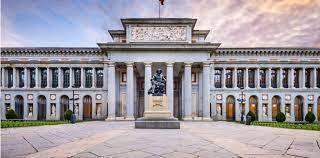

MUSEU NACIONAL DO PRADO | MADRI, ESPANHA
O Museu do Prado é o mais importante museu da Espanha e um dos mais importantes do mundo. Apresentando belas e preciosas obras de arte, localiza-se em Madrid e foi mandado construir por Carlos III. As obras de construção se estenderam por muitos anos, tendo sido inaugurado somente no reinado de Fernando VII.
História
Quando o rei Carlos III regressou de Nápoles à sua cidade natal, apercebeu-se de que Madrid não havia melhorado em nada desde que de lá tinha saído: Madrid continuava aquele lugar que, convertido repentinamente em capital por obra e graça de Filipe II, cresceu precipitada e desordenadamente e de um modo pouco consistente.
Decidiu assim encarregar Juan de Villanueva, o arquitecto real, de projectar um edifício destinado às Ciências e que pudesse albergar o Gabinete de História Natural.
Tal foi o culminar da carreira artística de Juan de Villanueva, sendo esta a maior e mais ambiciosa obra do neoclassicismo espanhol.
Com a construção deste edifício, concebido como uma operação urbanística de elevados custos, o rei Carlos III pretendia dotar a capital do seu reino com um espaço urbano e monumental, como os que abundavam nas restantes capitais europeias.
As obras de construção do museu prolongaram-se por muitos anos, ao largo de todo o reinado de Carlos IV. Porém, a chegada dos franceses a Espanha e a Guerra da Independência, interromperam-nas.
Foi então utilizado para fins militares, tendo-se aqui estabelecido um quartel militar. Neste momento começou a deterioração do edifício, que se notava cada vez mais, à medida que os anos avançavam.
A coleção
Este importante museu alberga numerosas e valiosíssimas colecções, entre elas, a de pintura e escultura.
A colecção de pintura é bastante completa e complexa, existindo neste museu coleções de pintura espanhola, francesa, flamenga, alemã e italiana:
Bela e interessante, a colecção de pintura francesa deriva das relações hispano-francesas no século XVII e das aquisições de alguns reis e nobres espanhóis, como Filipe IV e Filipe V. Esta reúne obras de pintores como Georges de La Tour, Valentin de Boulogne, Nicolas Poussin, Simon Vouet, Sébastien Bourdon e Claude Lorrain, bem como de Hyacinthe Rigaud, Louis-Michel van Loo, Jean Ranc, Antoine Watteau e de François Boucher.
A colecção de pintura espanhola é a mais importante do museu, sendo a que lhe concede o renome internacional que actualmente tem. Obedecendo a um critério cronológico, o Prado expõe desde os murais românicos do século XII à produção de Francisco Goya. Esta colecção alberga obras de pintores espanhóis de fama internacional, como El Greco, Luis de Morales, Velázquez, Zurbarán, José de Ribera, Esteban Murillo, Luis Paret, Luis Meléndez, Vicente López, Eduardo Rosales, Mariano Fortuny, Joaquín Sorolla, José de Madrazo e o filho deste, Federico de Madrazo y Kuntz.
O facto de os Países Baixos terem integrado o grande império espanhol, durante o chamado El siglo de oro, explica a riqueza da colecção da escola flamenga no Museu do Prado. A colecção alberga pintura de pintores como Hieronymus Bosch, Rogier van der Weyden, Petrus Christus, Dirck Bouts, Jan Gossaert, Pieter Coecke, Hans Memling, Pieter Bruegel o velho e Adriaan Isenbrant, tal como de Rubens, Anthony van Dyck, Jacob Jordaens, Rembrandt, Gabriel Metsu, Adriaen van Ostade.
Reduzida em número, mas de grande qualidade, a colecção de pintura alemã alberga obras desde o século XVI ao século XVIII, dedicando diversas salas a pinturas capitais de Albrecht Dürer, Lucas Cranach, Hans Baldung e Anton Raphael Mengs.
Com dezesseis salas dedicadas à sua exposição, a secção da colecção de pintura italiana alberga obras desde a Baixa Renascença até ao século XVIII, reunindo pinturas de artistas muito famosos como Fra Angelico, Antonello da Messina, Andrea Mantegna, Botticelli, Raffaello Sanzio, Andrea del Sarto, Antonio da Correggio, Parmigianino, Sebastiano del Piombo, Federico Barocci, Annibale Carracci, Caravaggio, Orazio Gentileschi, Pietro da Cortona, Luca Giordano, Giambattista Tiepolo, Pompeo Batoni, Giovanni Pannini e Corrado Giaquinto. Para além destes, podem aqui observar-se excelsas obras de Ticiano, Tintoretto, Veronèse, Jacopo Bassano...